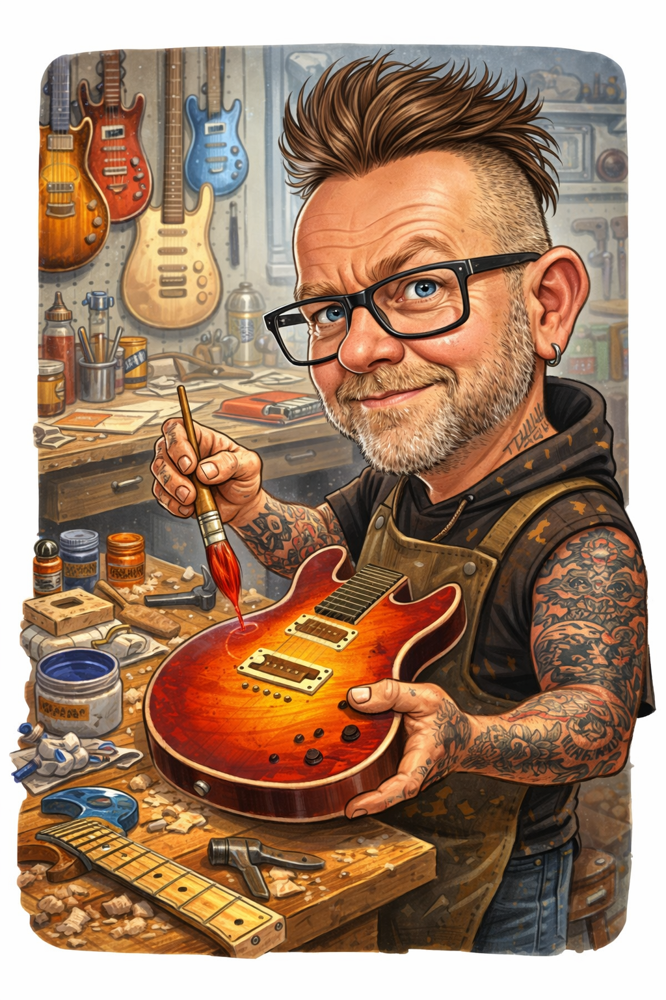

Møt byggeren

Pål Steenersen
Jeg er født i 1971 og har alltid hatt en lidenskap for musikk, håndverk og det å skape ting med hendene. I ungdomsårene spilte jeg trommer, gitar og mandolin i flere band, samtidig som interessen for bygging og design vokste.
I over tretti år har jeg bygget prisvinnende custom motorsykler. Gjennom årene har jeg laget tanker, skjermer, maskinert egne deler, sydd skinnarbeider, utført avansert lakkering, pinstriping og kunstlakkering. Denne erfaringen har gitt meg et sterkt fokus på presisjon, detaljer og kvalitet.
Interessen for gitarer har alltid vært der. Etter mange år med modifisering og omlakkering av egne instrumenter bygget jeg min første gitar helt fra bunnen i 2019.
Siden den gang har jeg konstruert egne jigger, spesialverktøy og arbeidsmetoder for å kunne bygge gitarene slik jeg mener de skal lages – én om gangen, uten kompromisser.
Jeg bygger bare et fåtall instrumenter hvert år. Målet er ikke masseproduksjon, men å skape gitarer med personlighet, høy kvalitet og et håndverk jeg kan være stolt av.